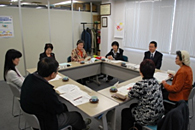

埼玉県消費者団体連絡会
- 【日 時】
- 3月8日(木)10:00～12:00
- 【場 所】
- 埼玉県生協連・会議室
- 【出席者】
- 8人(埼玉消団連事務局長・議長、県婦連、新婦人、母親連絡会、生協ネットワーク協議会、さいたま市消団連、事務局）
■議 題

- 2011年度活動のまとめ（案）について
- 2012年度活動方針(案)について
- 学習テーマ：
- 残留農薬(行政指導、GAP、作る側からの監視指導等）
- 食品表示やBSE（これからの動きに注意が必要）、放射性物質（海産物、身体に入っての影響、学校給食等）等。
- 2012年度年間日程(案)について
- その他
- 報告事項
資料を確認いただき、加筆修正がある場合は、事務局へ連絡いただくようにしました。
※欠席者からの感想：第2回で他団体と交流ができ、それぞれの放射能についての学習会に参加でき良かった。
早い段階で懇談会等テーマを発信していただけると団体メンバーと話し合うことができ、会議へ持ち寄ることができます。
基本的に、場所は県生協連会議室、時間は10時から12時までとします。
・県との懇談会について
・オンブズ会議について
（1）埼玉県食品安全局との懇談会（1/23）
（2）第5回食の安全オンブズ会議（1/23）
（3）関東農政局 関東ブロック「消費者団体との意見交換会」（2/13）
（4）平成24年度食品衛生監視指導計画（案）に対しての要望書
埼玉県、さいたま市、川越市